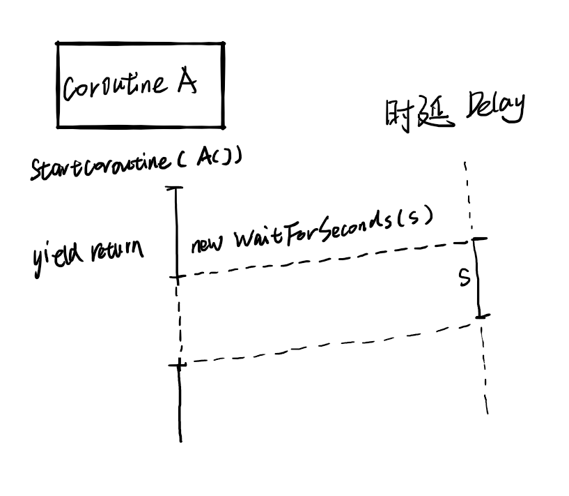
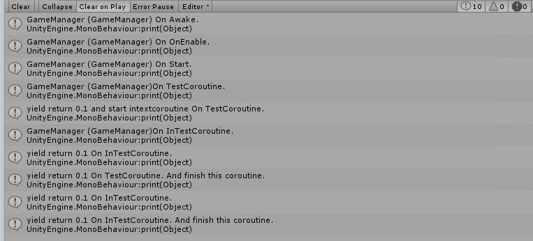
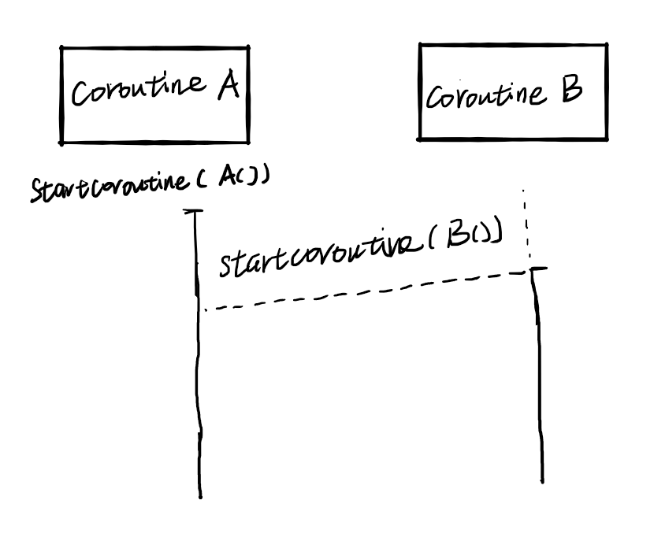
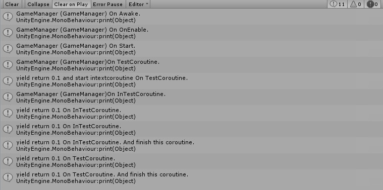
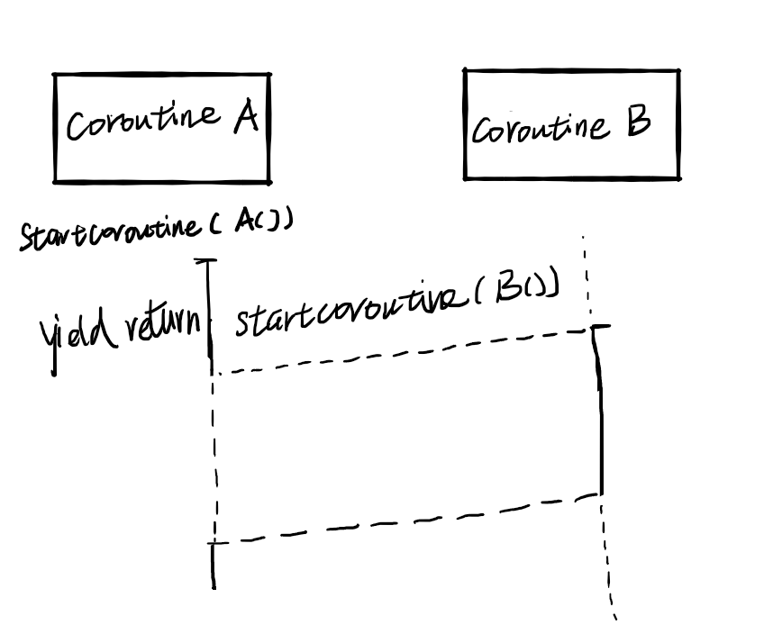
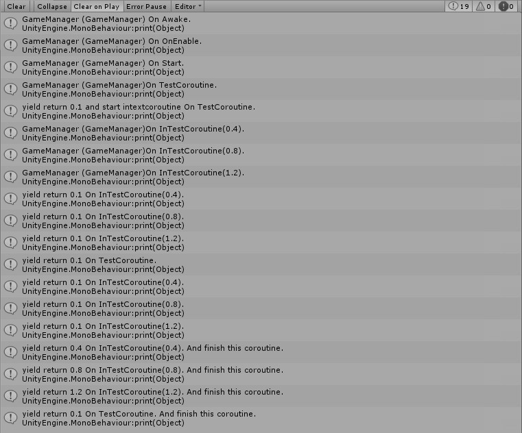
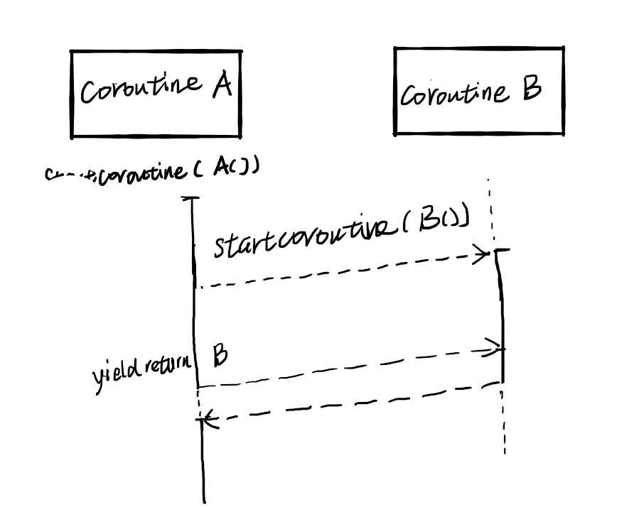

〇、
- 同步等待
- 异步协程
- 同步协程
- 并行协程
一、
同步等待是指，当调用了 yield return yieldInstruction 时，会根据不同的指令的不同，暂时挂起（ suspend ）协程，等待条件满足后，继续执行协程。
1 | yield return new WaitForSeconds(0.1f); |
同步等待的示意图如下：

二、
1 | void Start() |
在协程中开启新协程，两个协程并行执行。即异步（ Asynchronous ）执行。新的协程并未阻塞旧协程，而是各自执行到结束。

异步协程的示意图如下：

三、
1 | IEnumerator TestCoroutine() |
修改 TextCoroutine 中的代码，将启动新协程的命令修改为 yield return StartCoroutine()，此时，在执行程序后，旧的协程会在新协程执行结束后执行。

同步协程的示意图如下：

四、
1 | IEnumerator TestCoroutine() |
将开启的协程保存在 UnityEngine 定义的 Coroutine 对象中，可以据此查询协程的执行状态。这里启动的每个协程对于旧的协程都是异步执行的，而这些新协程在同一刻开始并行执行，到了最后，让旧的协程同步等待新协程执行完毕后，才结束自己的执行。

并行协程的示意图如下：
